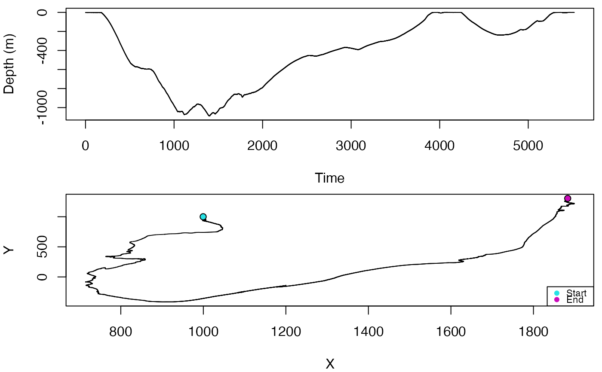

Reconstruct a track from pitch, heading and depth data, given a starting position
Source:R/track3D.R
track3D.RdThe track3D function will use data from a tag to reconstruct a track by fitting a state space model using a Kalman filter. If no x,y observations are provided then this corresponds to a pseudo-track obtained via dead reckoning and extreme care is required in interpreting the results.
Usage
track3D(
z,
phi,
psi,
sf,
r = 0.001,
q1p = 0.02,
q2p = 0.08,
q3p = 1.6e-05,
tagonx,
tagony,
enforce = TRUE,
x,
y
)Arguments
- z
A vector with depth over time (in meters, an observation)
- phi
A vector with pitch over time (in Radians, assumed as a known covariate)
- psi
A vector with heading over time (in Radians, assumed as a known covariate)
- sf
A scalar defining the sampling rate (in Hz)
- r
Observation error
- q1p
speed state error
- q2p
depth state error
- q3p
x and y state error
- tagonx
Easting of starting position (in meters, so requires projected data)
- tagony
Northing of starting position (in meters, so requires projected data)
- enforce
If TRUE (the default), then speed and depth are kept strictly positive
- x
Direct observations of Easting (in meters, so requires projected data)
- y
Direct observations of Northing (in meters, so requires projected data)
Value
A list with 10 elements:
p: the smoothed speeds
fit.ks: the fitted speeds
fit.kd: the fitted depths
fit.xs: the fitted xs
fit.ys: the fitted ys
fit.rd: the smoothed depths
fit.rx: the smoothed xs
fit.ry: the smoothed ys
fit.kp: the kalman a posteriori state covariance
fit.ksmo: the kalman smoother variance
Note
Output sampling rate is the same as the input sampling rate.
Frame: This function assumes a [north,east,up] navigation frame and a [forward,right,up] local frame. In these frames, a positive pitch angle is an anti-clockwise rotation around the y-axis. A positive roll angle is a clockwise rotation around the x-axis. A descending animal will have a negative pitch angle while an animal rolled with its right side up will have a positive roll angle.
This function output can be quite sensitive to the inputs used, namely those that define the relative weight given to the existing data, in particular regarding (x,y)=(lat,long); increasing q3p, the (x,y) state variance, will increase the weight given to independent observations of (x,y), say from GPS readings
Examples
p <- a2pr(A = beaked_whale$A$data)
h <- m2h(M = beaked_whale$M$data, A = beaked_whale$A$data)
track <- track3D(z = beaked_whale$P$data, phi = p$p,
psi = h$h, sf = beaked_whale$A$sampling_rate,
r = 0.001, q1p = 0.02, q2p = 0.08, q3p = 1.6e-05,
tagonx = 1000, tagony = 1000, enforce = TRUE, x = NA, y = NA)
oldpar <- graphics::par(no.readonly = TRUE)
graphics::par(mfrow = c(2, 1), mar = c(4, 4, 0.5, 0.5))
plot(-beaked_whale$P$data, pch = ".", ylab = "Depth (m)",
xlab = "Time")
plot(track$fit.rx, track$fit.ry, xlab = "X",
ylab = "Y", pch = ".")
points(track$fit.rx[c(1, length(track$fit.rx))],
track$fit.ry[c(1, length(track$fit.rx))], pch = 21, bg = 5:6)
legend("bottomright", cex = 0.7, legend = c("Start", "End"),
col = c(5, 6), pt.bg = c(5, 6), pch = c(21, 21))

graphics::par(oldpar)